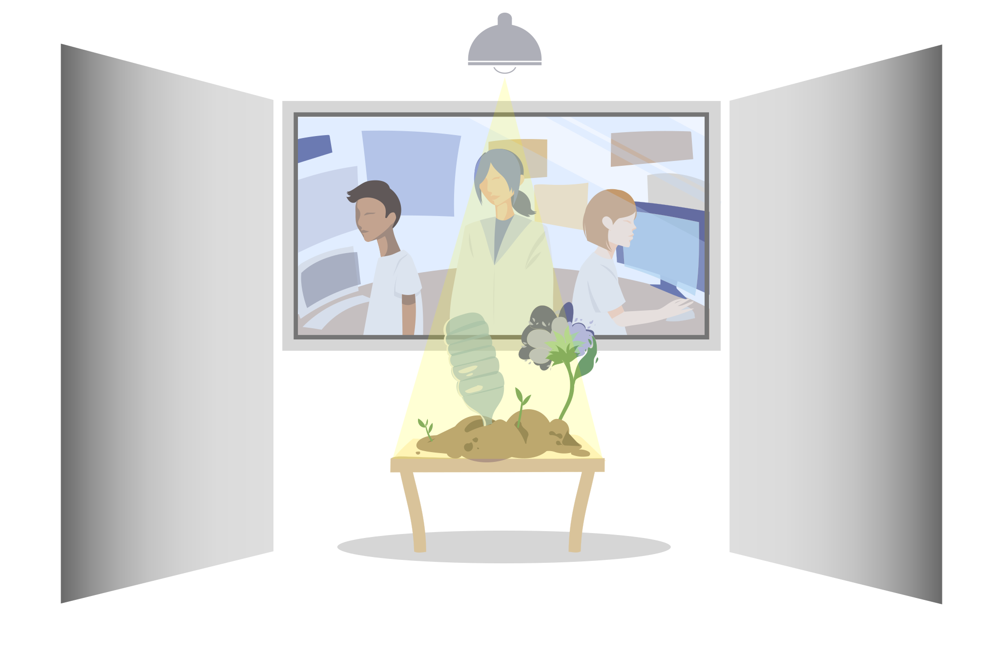

We envision a circular plastics economy where the cost of recycled plastics is lower than producing virgin plastic. Further, we hope to valorize plastic waste and transform our trash into a critical sustainable resource. Our goal is to construct a highly
thermostable and catalytically active enzyme for plastic waste recycling.